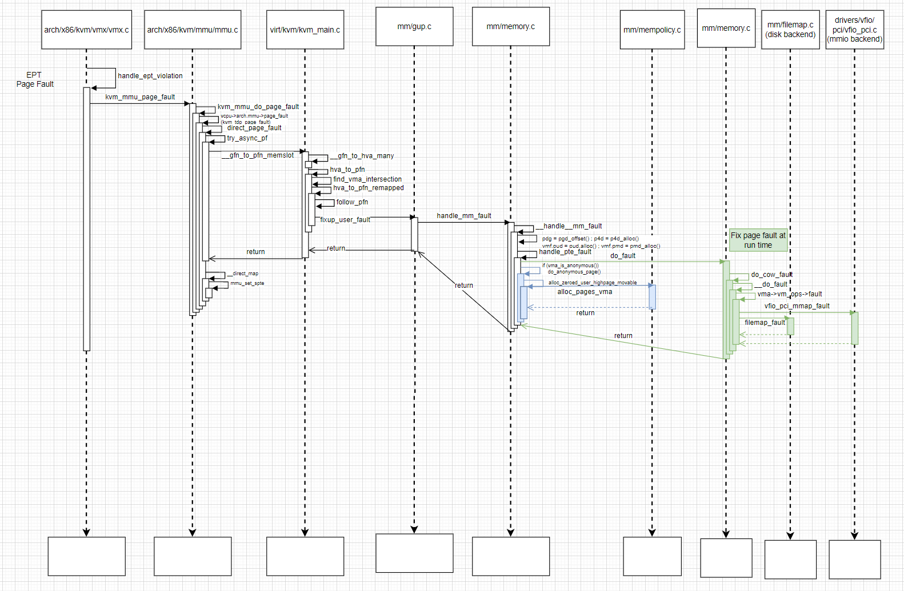
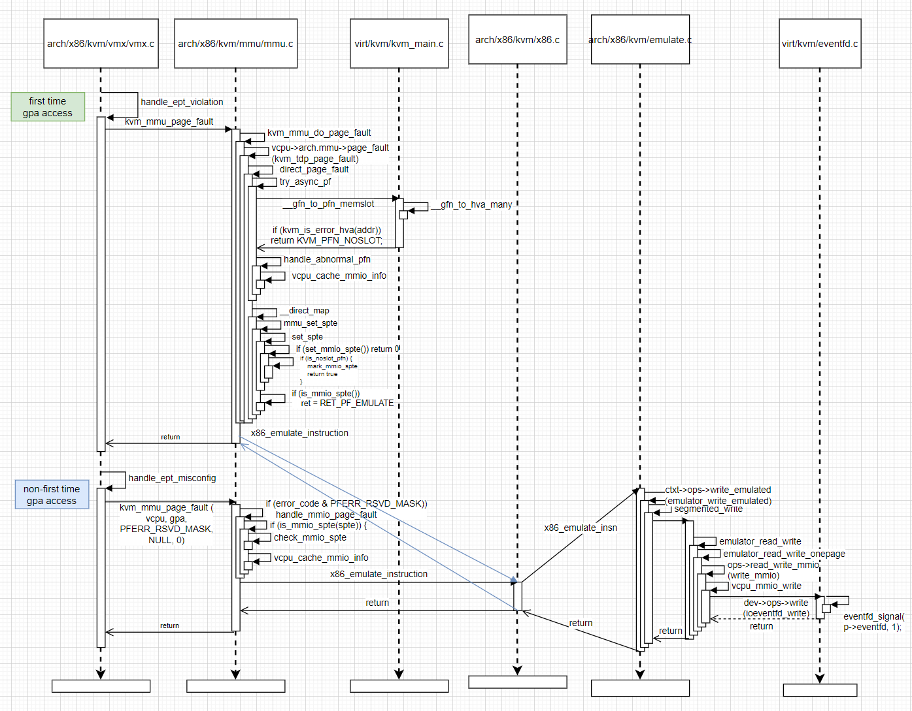
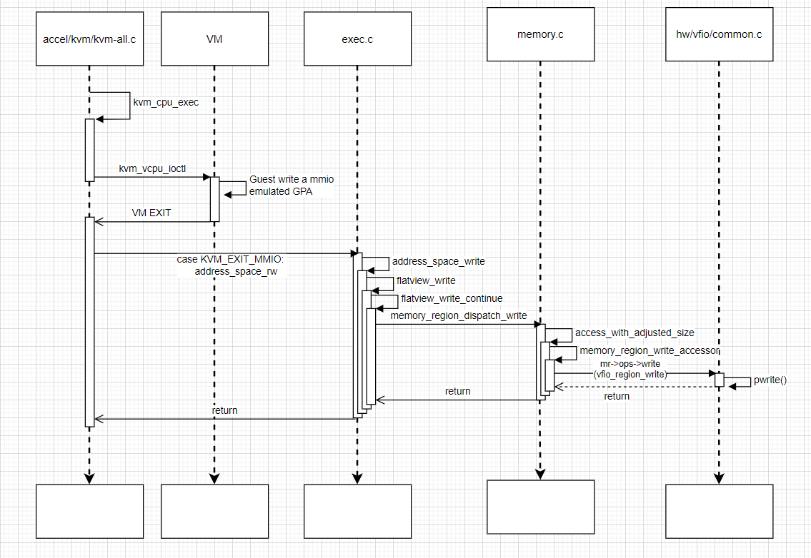

How Qemu/KVM manage VM memory: Part2 mmio
1. Introduction
This article summarizes init and runtime for memory mapped io, including trapping and passthrough.
2. Prerequesities
QEMU 4.1.1
Kernel 5.11
3. MMIO Passthrough
For mmio passthrough case, the memory region we want to direct map to Guest address space is typically a device region(e.g. PCI BAR0-5).
compared to system ram which is allocated by anonymous mmap, the mmio region is setup by vfio fd mmap, which is implemented in device driver. So most of the page fault process is almost the same as system ram handler, except below:
4343 static vm_fault_t handle_pte_fault(struct vm_fault *vmf)
4344 {
4345 ▸ pte_t entry;
4346
4347 ▸ if (unlikely(pmd_none(*vmf->pmd)))
...
4383 ▸ if (!vmf->pte) {
4384 ▸ ▸ if (vma_is_anonymous(vmf->vma))
4385 ▸ ▸ ▸ return do_anonymous_page(vmf);
4386 ▸ ▸ else
4387 ▸ ▸ ▸ return do_fault(vmf);
4388 ▸ }
4389
mm/memory.c
The mmio region is not anonymous, so go to do_fault() handler:
4111 static vm_fault_t do_fault(struct vm_fault *vmf)
4112 {
4113 ▸ struct vm_area_struct *vma = vmf->vma;
4114 ▸ struct mm_struct *vm_mm = vma->vm_mm;
4115 ▸ vm_fault_t ret;
4116
...
4118 ▸ * The VMA was not fully populated on mmap() or missing VM_DONTEXPAND
4119 ▸ */
4120 ▸ if (!vma->vm_ops->fault) {
...
4145 ▸ ▸ }
4146 ▸ } else if (!(vmf->flags & FAULT_FLAG_WRITE))
4147 ▸ ▸ ret = do_read_fault(vmf);
4148 ▸ else if (!(vma->vm_flags & VM_SHARED))
4149 ▸ ▸ ret = do_cow_fault(vmf);
4150 ▸ else
4151 ▸ ▸ ret = do_shared_fault(vmf);
4152
4153 ▸ /* preallocated pagetable is unused: free it */
4154 ▸ if (vmf->prealloc_pte) {
4155 ▸ ▸ pte_free(vm_mm, vmf->prealloc_pte);
4156 ▸ ▸ vmf->prealloc_pte = NULL;
4157 ▸ }
4158 ▸ return ret;
4159 }
mm/memory.c
So for let's take cow(copy-on-write) for example, like system ram at qemu init, host userspace address is allocated, but the backed host page frame is not allocated and page table is not setup. Then, we'll do copy on write in kernel, this is do_cow_fault()
4030 static vm_fault_t do_cow_fault(struct vm_fault *vmf)
4031 {
4032 ▸ struct vm_area_struct *vma = vmf->vma;
4033 ▸ vm_fault_t ret;
4034
4035 ▸ if (unlikely(anon_vma_prepare(vma)))
4036 ▸ ▸ return VM_FAULT_OOM;
4037
4038 ▸ vmf->cow_page = alloc_page_vma(GFP_HIGHUSER_MOVABLE, vma, vmf->address);
...
4048 ▸ ret = __do_fault(vmf);
...
3598 static vm_fault_t __do_fault(struct vm_fault *vmf)
3599 {
...
3624
3625 ▸ ret = vma->vm_ops->fault(vmf);
....
3643 ▸ return ret;
3644 }
mm/memory.c
This vm_ops fault handler may have serval backend, e.g. pci region and disk
3.1 pci region backend
Then the backend specific fault handler is called. Let's take vfio pci as example:
1613 static vm_fault_t vfio_pci_mmap_fault(struct vm_fault *vmf)
1614 {
1615 ▸ struct vm_area_struct *vma = vmf->vma;
1616 ▸ struct vfio_pci_device *vdev = vma->vm_private_data;
1617 ▸ vm_fault_t ret = VM_FAULT_NOPAGE;
1618
1619 ▸ mutex_lock(&vdev->vma_lock);
1620 ▸ down_read(&vdev->memory_lock);
1621
1622 ▸ if (!__vfio_pci_memory_enabled(vdev)) {
1623 ▸ ▸ ret = VM_FAULT_SIGBUS;
1624 ▸ ▸ mutex_unlock(&vdev->vma_lock);
1625 ▸ ▸ goto up_out;
1626 ▸ }
1627
1628 ▸ if (__vfio_pci_add_vma(vdev, vma)) {
1629 ▸ ▸ ret = VM_FAULT_OOM;
1630 ▸ ▸ mutex_unlock(&vdev->vma_lock);
1631 ▸ ▸ goto up_out;
1632 ▸ }
1633
1634 ▸ mutex_unlock(&vdev->vma_lock);
1635
1636 ▸ if (io_remap_pfn_range(vma, vma->vm_start, vma->vm_pgoff,
1637 ▸ ▸ ▸ vma->vm_end - vma->vm_start, vma->vm_page_prot))
1638 ▸ ▸ ret = VM_FAULT_SIGBUS;
1639
1640 up_out:
1641 ▸ up_read(&vdev->memory_lock);
1642 ▸ return ret;
1643 }
1644
1645 static const struct vm_operations_struct vfio_pci_mmap_ops = {
1646 ▸ .open = vfio_pci_mmap_open,
1647 ▸ .close = vfio_pci_mmap_close,
1648 ▸ .fault = vfio_pci_mmap_fault,
1649 };
drivers/vfio/pci/vfio_pci.c
In vfio_pci_mmap_fault, io_remap_pfn_range() is called to setup the page table in host process space.
Another alterative implementation is that we directly setup the page table when mmap() syscall is called by QEMU, let's take intel gpu driver as example:
1216 static int intel_vgpu_mmap(struct mdev_device *mdev, struct vm_area_struct *vma)
1217 {
1218 ▸ unsigned int index;
1219 ▸ u64 virtaddr;
...
1249
1250 ▸ return remap_pfn_range(vma, virtaddr, pgoff, req_size, pg_prot);
1251 }
1252
...
1655 static struct mdev_parent_ops intel_vgpu_ops = {
1656 ▸ .mdev_attr_groups = intel_vgpu_groups,
1657 ▸ .create▸▸ ▸ = intel_vgpu_create,
1658 ▸ .remove▸▸ ▸ = intel_vgpu_remove,
1659
1660 ▸ .open▸ ▸ ▸ = intel_vgpu_open,
1661 ▸ .release▸ ▸ = intel_vgpu_release,
1662
1663 ▸ .read▸ ▸ ▸ = intel_vgpu_read,
1664 ▸ .write▸ ▸ ▸ = intel_vgpu_write,
1665 ▸ .mmap▸ ▸ ▸ = intel_vgpu_mmap,
1666 ▸ .ioctl▸ ▸ ▸ = intel_vgpu_ioctl,
1667 };
1668
drivers/gpu/drm/i915/gvt/kvmgt.c
Then whenever guest access an invalid EPT page table, kernel doesn't need to fix user page fault, since user space page has already been setup before, it just find it and give to EPT page table setup function. This method is implementation easy, but its drawback is that unnecessary page table maybe setup even the guest may not need it, since this is not on-demand paging, but pre-setup.
3.2 disk backend
The mmaped fd may be backed by disk file system like ext4:
742 static const struct vm_operations_struct ext4_file_vm_ops = {
743 ▸ .fault▸ ▸ = ext4_filemap_fault,
744 ▸ .map_pages▸ = filemap_map_pages,
745 ▸ .page_mkwrite = ext4_page_mkwrite,
746 };
747
748 static int ext4_file_mmap(struct file *file, struct vm_area_struct *vma)
749 {
750 ▸ struct inode *inode = file->f_mapping->host;
751 ▸ struct ext4_sb_info *sbi = EXT4_SB(inode->i_sb);
752 ▸ struct dax_device *dax_dev = sbi->s_daxdev;
753
754 ▸ if (unlikely(ext4_forced_shutdown(sbi)))
755 ▸ ▸ return -EIO;
756
757 ▸ /*
758 ▸ * We don't support synchronous mappings for non-DAX files and
759 ▸ * for DAX files if underneath dax_device is not synchronous.
760 ▸ */
761 ▸ if (!daxdev_mapping_supported(vma, dax_dev))
762 ▸ ▸ return -EOPNOTSUPP;
763
764 ▸ file_accessed(file);
765 ▸ if (IS_DAX(file_inode(file))) {
766 ▸ ▸ vma->vm_ops = &ext4_dax_vm_ops;
767 ▸ ▸ vma->vm_flags |= VM_HUGEPAGE;
768 ▸ } else {
769 ▸ ▸ vma->vm_ops = &ext4_file_vm_ops;
770 ▸ }
771 ▸ return 0;
772 }
fs/ext4/file.c
6199 vm_fault_t ext4_filemap_fault(struct vm_fault *vmf)
6200 {
6201 ▸ struct inode *inode = file_inode(vmf->vma->vm_file);
6202 ▸ vm_fault_t ret;
6203
6204 ▸ down_read(&EXT4_I(inode)->i_mmap_sem);
6205 ▸ ret = filemap_fault(vmf);
6206 ▸ up_read(&EXT4_I(inode)->i_mmap_sem);
6207
6208 ▸ return ret;
6209 }
fs/ext4/inode.c
filemap_fault() is a common function kernel provides for filesystem implementation.
The overall UML sequence diagram, blue part is system ram handler, green part is mmio handler:

4. mmio trapping
4.1 how is mmio trapping handled in kvm
From a VM's perspective, when some GPA which is used for mmio trapping is accessed, since this GPA mapped EPT page table is not setup, EPT violation is triggered(like page fault in host process context).
5284 static int handle_ept_violation(struct kvm_vcpu *vcpu)
5285 {
5286 ▸ unsigned long exit_qualification;
5287 ▸ gpa_t gpa;
5288 ▸ u64 error_c
...
5337 ▸ return kvm_mmu_page_fault(vcpu, gpa, error_code, NULL, 0);
5338 }
arch/x86/kvm/vmx/vmx.c
5057 int kvm_mmu_page_fault(struct kvm_vcpu *vcpu, gpa_t cr2_or_gpa, u64 error_code,
5058 ▸ ▸ void *insn, int insn_len)
5059 {
5060 ▸ int r, emulation_type = EMULTYPE_
...
5073 ▸ if (r == RET_PF_INVALID) {
5074 ▸ ▸ r = kvm_mmu_do_page_fault(vcpu, cr2_or_gpa,
5075 ▸ ▸ ▸ ▸ ▸ lower_32_bits(error_code), false);
112 static inline int kvm_mmu_do_page_fault(struct kvm_vcpu *vcpu, gpa_t cr2_or_gpa,
113 ▸ ▸ ▸ ▸ ▸ u32 err, bool prefault)
114 {
115 #ifdef CONFIG_RETPOLINE
116 ▸ if (likely(vcpu->arch.mmu->page_fault == kvm_tdp_page_fault))
117 ▸ ▸ return kvm_tdp_page_fault(vcpu, cr2_or_gpa, err, prefault);
118 #endif
119 ▸ return vcpu->arch.mmu->page_fault(vcpu, cr2_or_gpa, err, prefault);
120 }
arch/x86/kvm/mmu.h
3790 int kvm_tdp_page_fault(struct kvm_vcpu *vcpu, gpa_t gpa, u32 error_code,
3791 ▸ ▸ bool prefault)
3792 {
...
3805 ▸ return direct_page_fault(vcpu, gpa, error_code, prefault,
3806 ▸ ▸ ▸ ▸ max_level, true);
3807 }
arch/x86/kvm/mmu/mmu.c
3693 static int direct_page_fault(struct kvm_vcpu *vcpu, gpa_t gpa, u32 error_code,
3694 ▸ ▸ ▸ bool prefault, int max_level, bool is_tdp)
3695 {
...
3720 ▸ if (try_async_pf(vcpu, prefault, gfn, gpa, &pfn, write, &map_writable))
3721 ▸ ▸ return RET_PF_RETRY;
3722
3723 ▸ if (handle_abnormal_pfn(vcpu, is_tdp ? 0 : gpa, gfn, pfn, ACC_ALL, &r))
3724 ▸ ▸ return r;
3725
3726 ▸ r = RET_PF_RETRY;
...
3734 ▸ if (is_tdp_mmu_root(vcpu->kvm, vcpu->arch.mmu->root_hpa))
3735 ▸ ▸ r = kvm_tdp_mmu_map(vcpu, gpa, error_code, map_writable, max_level,
3736 ▸ ▸ ▸ ▸ pfn, prefault);
3737 ▸ else
3738 ▸ ▸ r = __direct_map(vcpu, gpa, error_code, map_writable, max_level, pfn,
arch/x86/kvm/mmu/mmu.c
like the case for system ram, kvm will firstly try to find GPA mapped HPA(pfn), but may failed because there is no kvm slot contain this GPA:
3660 static bool try_async_pf(struct kvm_vcpu *vcpu, bool prefault, gfn_t gfn,
3661 ▸ ▸ ▸ gpa_t cr2_or_gpa, kvm_pfn_t *pfn, bool write,
3662 ▸ ▸ ▸ bool *writable)
3663 {
3664 ▸ struct kvm_memory_slot *slot = kvm_vcpu_gfn_to_memslot(vcpu, gfn);
/* kvm_vcpu_gfn_to_memslot will return NULL here*/
3665 ▸ bool async;
3666
...
3675 ▸ *pfn = __gfn_to_pfn_memslot(slot, gfn, false, &async, write, writable);
3676 ▸ if (!async)
3677 ▸ ▸ return false; /* *pfn has correct page already */
...
3689 ▸ *pfn = __gfn_to_pfn_memslot(slot, gfn, false, NULL, write, writable);
3690 ▸ return false;
3691 }
arch/x86/kvm/mmu/mmu.c
1741 static unsigned long __gfn_to_hva_many(struct kvm_memory_slot *slot, gfn_t gfn,
1742 ▸ ▸ ▸ ▸ gfn_t *nr_pages, bool write)
1743 {
1744 ▸ if (!slot || slot->flags & KVM_MEMSLOT_INVALID)
1745 ▸ ▸ return KVM_HVA_ERR_BAD;
1746
1747 ▸ if (memslot_is_readonly(slot) && write)
1748 ▸ ▸ return KVM_HVA_ERR_RO_BAD;
1749
1750 ▸ if (nr_pages)
1751 ▸ ▸ *nr_pages = slot->npages - (gfn - slot->base_gfn);
1752
1753 ▸ return __gfn_to_hva_memslot(slot, gfn);
1754 }
1755
...
2012 kvm_pfn_t __gfn_to_pfn_memslot(struct kvm_memory_slot *slot, gfn_t gfn,
2013 ▸ ▸ ▸ bool atomic, bool *async, bool write_fault,
2014 ▸ ▸ ▸ bool *writable)
2015 {
2016 ▸ unsigned long addr = __gfn_to_hva_many(slot, gfn, NULL, write_fault);
/* KVM_HVA_ERR_BAD will return */
2017
2018 ▸ if (addr == KVM_HVA_ERR_RO_BAD) {
2019 ▸ ▸ if (writable)
2020 ▸ ▸ ▸ *writable = false;
2021 ▸ ▸ return KVM_PFN_ERR_RO_FAULT;
2022 ▸ }
2023
2024 ▸ if (kvm_is_error_hva(addr)) {
2025 ▸ ▸ if (writable)
2026 ▸ ▸ ▸ *writable = false;
2027 ▸ ▸ return KVM_PFN_NOSLOT;
/* return KVM_PFN_NOSLOT will be exectued */
2028 ▸ }
2029
...
virt/kvm/kvm_main.c
2949 static bool handle_abnormal_pfn(struct kvm_vcpu *vcpu, gva_t gva, gfn_t gfn,
2950 ▸ ▸ ▸ ▸ kvm_pfn_t pfn, unsigned int access,
2951 ▸ ▸ ▸ ▸ int *ret_val)
2952 {
2953 ▸ /* The pfn is invalid, report the error! */
2954 ▸ if (unlikely(is_error_pfn(pfn))) {
2955 ▸ ▸ *ret_val = kvm_handle_bad_page(vcpu, gfn, pfn);
2956 ▸ ▸ return true;
2957 ▸ }
2958
/* pfn == KVM_PFN_NOSLOT, if condition ture here */
2959 ▸ if (unlikely(is_noslot_pfn(pfn)))
2960 ▸ ▸ vcpu_cache_mmio_info(vcpu, gva, gfn,
2961 ▸ ▸ ▸ ▸ access & shadow_mmio_access_mask);
2962
2963 ▸ return false;
2964 }
2965
arch/x86/kvm/mmu/mmu.c
Finally, __direct_map will be executed in direct_page_fault():
2869 static int __direct_map(struct kvm_vcpu *vcpu, gpa_t gpa, u32 error_code,
2870 ▸ ▸ ▸ int map_writable, int max_level, kvm_pfn_t pfn,
2871 ▸ ▸ ▸ bool prefault, bool is_tdp)
2872 {
...
2915 ▸ ret = mmu_set_spte(vcpu, it.sptep, ACC_ALL,
2916 ▸ ▸ ▸ write, level, base_gfn, pfn, prefault,
2917 ▸ ▸ ▸ map_writable);
...
2606 static int mmu_set_spte(struct kvm_vcpu *vcpu, u64 *sptep,
2607 ▸ ▸ ▸ unsigned int pte_access, bool write_fault, int level,
2608 ▸ ▸ ▸ gfn_t gfn, kvm_pfn_t pfn, bool speculative,
2609 ▸ ▸ ▸ bool host_writable)
2610 {
...
/* set_spte find pfn is noslot, it wiill mark this as mmio */
2641 ▸ set_spte_ret = set_spte(vcpu, sptep, pte_access, level, gfn, pfn,
2642 ▸ ▸ ▸ ▸ speculative, true, host_writable);
...
2653 ▸ if (unlikely(is_mmio_spte(*sptep)))
2654 ▸ ▸ ret = RET_PF_EMULATE;
2655
arch/x86/kvm/mmu/mmu.c
2579 static int set_spte(struct kvm_vcpu *vcpu, u64 *sptep,
2580 ▸ ▸ unsigned int pte_access, int level,
2581 ▸ ▸ gfn_t gfn, kvm_pfn_t pfn, bool speculative,
2582 ▸ ▸ bool can_unsync, bool host_writable)
2583 {
2584 ▸ u64 spte;
2585 ▸ struct kvm_mmu_page *sp;
2586 ▸ int ret;
2587
2588 ▸ if (set_mmio_spte(vcpu, sptep, gfn, pfn, pte_access))
2589 ▸ ▸ return 0;
....
239 static bool set_mmio_spte(struct kvm_vcpu *vcpu, u64 *sptep, gfn_t gfn,
240 ▸ ▸ ▸ kvm_pfn_t pfn, unsigned int access)
241 {
242 ▸ if (unlikely(is_noslot_pfn(pfn))) {
243 ▸ ▸ mark_mmio_spte(vcpu, sptep, gfn, access);
244 ▸ ▸ return true;
245 ▸ }
246
247 ▸ return false;
248 }
249
...
215 static void mark_mmio_spte(struct kvm_vcpu *vcpu, u64 *sptep, u64 gfn,
216 ▸ ▸ ▸ unsigned int access)
217 {
218 ▸ u64 mask = make_mmio_spte(vcpu, gfn, access);
219
220 ▸ trace_mark_mmio_spte(sptep, gfn, mask);
221 ▸ mmu_spte_set(sptep, mask);
222 }
223
arch/x86/kvm/mmu/mmu.c
mark_mmio_spte is the function to mark some reserved bits in EPT page table entry in reserved region, once bits set done, next time VM is trying to access these pages, ept_misconfig will be triggered instead of ept_violation. But for the first time gpa access, KVM still need to handle it.
2606 static int mmu_set_spte(struct kvm_vcpu *vcpu, u64 *sptep,
2607 ▸ ▸ ▸ unsigned int pte_access, bool write_fault, int level,
2608 ▸ ▸ ▸ gfn_t gfn, kvm_pfn_t pfn, bool speculative,
2609 ▸ ▸ ▸ bool host_writable)
2610 {
...
/* set_spte find pfn is noslot, it wiill mark this as mmio */
2641 ▸ set_spte_ret = set_spte(vcpu, sptep, pte_access, level, gfn, pfn,
2642 ▸ ▸ ▸ ▸ speculative, true, host_writable);
...
2653 ▸ if (unlikely(is_mmio_spte(*sptep)))
2654 ▸ ▸ ret = RET_PF_EMULATE;
/* mark as RET_PF_EMULATE to handle mmio access */
2655
arch/x86/kvm/mmu/mmu.c
Now we return back to the function kvm_mmu_page_fault(), this function will be called in two places:
5284 static int handle_ept_violation(struct kvm_vcpu *vcpu)
5285 {
5286 ▸ unsigned long exit_qualification;
5287 ▸ gpa_t gpa;
5288 ▸ u64 error_code;
...
5337 ▸ return kvm_mmu_page_fault(vcpu, gpa, error_code, NULL, 0);
5338 }
...
5340 static int handle_ept_misconfig(struct kvm_vcpu *vcpu)
5341 {
5342 ▸ gpa_t gpa;
5343
...
5355 ▸ return kvm_mmu_page_fault(vcpu, gpa, PFERR_RSVD_MASK, NULL, 0);
5356 }
So kvm_mmu_page_fault will be called as the first time mmio access in handle_ept_violation and non-first time mmio access in handle_ept_misconfig. in handle_ept_misconfig PFERR_RSVD_MASK is passed to tell the function to deal with mmio case.
5057 int kvm_mmu_page_fault(struct kvm_vcpu *vcpu, gpa_t cr2_or_gpa, u64 error_code,
5058 ▸ ▸ void *insn, int insn_len)
5059 {
5060 ▸ int r, emulation_type = EMULTYPE_PF;
5061 ▸ bool direct = vcpu->arch.mmu->direct_map;
5062
5063 ▸ if (WARN_ON(!VALID_PAGE(vcpu->arch.mmu->root_hpa)))
5064 ▸ ▸ return RET_PF_RETRY;
5065
5066 ▸ r = RET_PF_INVALID;
/* non-first time mmio access handler called by handle_ept_misconfig */
5067 ▸ if (unlikely(error_code & PFERR_RSVD_MASK)) {
5068 ▸ ▸ r = handle_mmio_page_fault(vcpu, cr2_or_gpa, direct);
5069 ▸ ▸ if (r == RET_PF_EMULATE)
5070 ▸ ▸ ▸ goto emulate;
5071 ▸ }
5072
/* first time mmio access handler called by handle_ept_violation */
5073 ▸ if (r == RET_PF_INVALID) {
5074 ▸ ▸ r = kvm_mmu_do_page_fault(vcpu, cr2_or_gpa,
5075 ▸ ▸ ▸ ▸ ▸ lower_32_bits(error_code), false);
/* RET_PF_EMULATE is returned here */
5076 ▸ ▸ if (WARN_ON_ONCE(r == RET_PF_INVALID))
5077 ▸ ▸ ▸ return -EIO;
5078 ▸ }
5079
5080 ▸ if (r < 0)
5081 ▸ ▸ return r;
5082 ▸ if (r != RET_PF_EMULATE)
5083 ▸ ▸ return 1;
...
5111 emulate:
5112 ▸ return x86_emulate_instruction(vcpu, cr2_or_gpa, emulation_type, insn,
5113 ▸ ▸ ▸ ▸ insn_len);
5114 }
arch/x86/kvm/mmu/mmu.c
Both of the cases will call arch/x86/kvm/mmu/mmu.c to do the mmio access emulation.
7313 int x86_emulate_instruction(struct kvm_vcpu *vcpu, gpa_t cr2_or_gpa,
7314 ▸ ▸ ▸ int emulation_type, void *insn, int insn_len)
7315 {
7316 ▸ int r;
7317 ▸ struct x86_emulate_ctxt *ctxt = vcpu->arch.emulate_ctxt;
7318 ▸ bool writeback = true;
7319 ▸ bool write_fault_to_spt;
...
7424
7425 ▸ r = x86_emulate_insn(ctxt);
7426
arch/x86/kvm/x86.c
5557 int x86_emulate_insn(struct x86_emulate_ctxt *ctxt)
5558 {
5559 ▸ const struct x86_emulate_ops *ops = ctxt->ops;
5560 ▸ int rc = X86EMUL_CONTINUE;
5561 ▸ int saved_dst_type = ctxt->dst.type;
5562 ▸ unsigned emul_flags;
...
5783 writeback:
5784 ▸ if (ctxt->d & SrcWrite) {
5785 ▸ ▸ BUG_ON(ctxt->src.type == OP_MEM || ctxt->src.type == OP_MEM_STR);
5786 ▸ ▸ rc = writeback(ctxt, &ctxt->src);
5787 ▸ ▸ if (rc != X86EMUL_CONTINUE)
5788 ▸ ▸ ▸ goto done;
5789 ▸ }
arch/x86/kvm/emulate.c
1843 static int writeback(struct x86_emulate_ctxt *ctxt, struct operand *op)
1844 {
1845 ▸ switch (op->type) {
...
1849 ▸ case OP_MEM:
...
1857 ▸ ▸ ▸ return segmented_write(ctxt,
1858 ▸ ▸ ▸ ▸ ▸ op->addr.mem,
1859 ▸ ▸ ▸ ▸ ▸ &op->val,
1860 ▸ ▸ ▸ ▸ ▸ op->bytes);
1861 ▸ ▸ break;
...
1484 static int segmented_write(struct x86_emulate_ctxt *ctxt,
1485 ▸ ▸ ▸ struct segmented_address addr,
1486 ▸ ▸ ▸ const void *data,
1487 ▸ ▸ ▸ unsigned size)
1488 {
...
1495 ▸ return ctxt->ops->write_emulated(ctxt, linear, data, size,
1496 ▸ ▸ ▸ ▸ ▸ &ctxt->exception);
arch/x86/kvm/emulate.c
6349 static int emulator_write_emulated(struct x86_emulate_ctxt *ctxt,
6350 ▸ ▸ ▸ unsigned long addr,
6351 ▸ ▸ ▸ const void *val,
6352 ▸ ▸ ▸ unsigned int bytes,
6353 ▸ ▸ ▸ struct x86_exception *exception)
6354 {
6355 ▸ return emulator_read_write(ctxt, addr, (void *)val, bytes,
6356 ▸ ▸ ▸ ▸ exception, &write_emultor);
6357 }
...
6285 static int emulator_read_write(struct x86_emulate_ctxt *ctxt,
6286 ▸ ▸ ▸ unsigned long addr,
6287 ▸ ▸ ▸ void *val, unsigned int bytes,
6288 ▸ ▸ ▸ struct x86_exception *exception,
6289 ▸ ▸ ▸ const struct read_write_emulator_ops *ops)
6290 {
...
6331 ▸ vcpu->run->mmio.len = min(8u, vcpu->mmio_fragments[0].len);
6332 ▸ vcpu->run->mmio.is_write = vcpu->mmio_is_write = ops->write;
6333 ▸ vcpu->run->exit_reason = KVM_EXIT_MMIO;
6334 ▸ vcpu->run->mmio.phys_addr = gpa;
6335
6336 ▸ return ops->read_write_exit_mmio(vcpu, gpa, val, bytes);
6337 }
6338
...
6198 static int write_mmio(struct kvm_vcpu *vcpu, gpa_t gpa, int bytes, void *val)
6199 {
6200 ▸ trace_kvm_mmio(KVM_TRACE_MMIO_WRITE, bytes, gpa, val);
6201 ▸ return vcpu_mmio_write(vcpu, gpa, bytes, val);
...
5831 static int vcpu_mmio_write(struct kvm_vcpu *vcpu, gpa_t addr, int len,
5832 ▸ ▸ ▸ const void *v)
5833 {
...
5838 ▸ ▸ n = min(len, 8);
5839 ▸ ▸ if (!(lapic_in_kernel(vcpu) &&
5840 ▸ ▸ !kvm_iodevice_write(vcpu, &vcpu->arch.apic->dev, addr, n, v))
5841 ▸ ▸ && kvm_io_bus_write(vcpu, KVM_MMIO_BUS, addr, n, v))
5842 ▸ ▸ ▸ break;
...
5849 ▸ return handled;
...
arch/x86/kvm/x86.c
732 /* MMIO/PIO writes trigger an event if the addr/val match */
733 static int
734 ioeventfd_write(struct kvm_vcpu *vcpu, struct kvm_io_device *this, gpa_t addr,
735 ▸ ▸ int len, const void *val)
736 {
737 ▸ struct _ioeventfd *p = to_ioeventfd(this);
...
742 ▸ eventfd_signal(p->eventfd, 1);
/* notify eventfd listener(QEMU) */
743 ▸ return 0;
744 }
745
757
758 static const struct kvm_io_device_ops ioeventfd_ops = {
759 ▸ .write = ioeventfd_write,
760 ▸ .destructor = ioeventfd_destructor,
761 };
762
virt/kvm/eventfd.c
Then QEMU will wake up from kvm_cpu_exec(), all the kernel context for mmio access handling is finished. UML sequence diagram is below:

4.2 how is mmio trapping handled in qemu
After checking how mmio access is handled in the kernel context, then we come to qemu part. As qemu launch VM by kvm_cpu_exec(), it won't be waken up until VM EXIT is triggered. Actually VM EXIT is sent by kernel through eventfd, so we continue from where kernel context exit:
2202 int kvm_cpu_exec(CPUState *cpu)
2203 {
2204 struct kvm_run *run = cpu->kvm_run;
2205 int ret, run_ret;
...
2236 /* Read cpu->exit_request before KVM_RUN reads run->immediate_exit.
2237 * Matching barrier in kvm_eat_signals.
2238 */
2239 smp_rmb();
2240
2241 run_ret = kvm_vcpu_ioctl(cpu, KVM_RUN, 0);
2242
2243 attrs = kvm_arch_post_run(cpu, run);
...
2277 switch (run->exit_reason) {
...
2288 case KVM_EXIT_MMIO:
2289 DPRINTF("handle_mmio\n");
2290 /* Called outside BQL */
2291 address_space_rw(&address_space_memory,
2292 run->mmio.phys_addr, attrs,
2293 run->mmio.data,
2294 run->mmio.len,
2295 run->mmio.is_write);
2296 ret = 0;
2297 break;
accel/kvm/kvm-all.c
3473 MemTxResult address_space_rw(AddressSpace *as, hwaddr addr, MemTxAttrs attrs,
3474 uint8_t *buf, hwaddr len, bool is_write)
3475 {
3476 if (is_write) {
3477 return address_space_write(as, addr, attrs, buf, len);
3478 } else {
3479 return address_space_read_full(as, addr, attrs, buf, len);
3480 }
...
3456 MemTxResult address_space_write(AddressSpace *as, hwaddr addr,
3457 MemTxAttrs attrs,
3458 const uint8_t *buf, hwaddr len)
3459 {
...
3465 fv = address_space_to_flatview(as);
3466 result = flatview_write(fv, addr, attrs, buf, len);
...
3365 /* Called from RCU critical section. */
3366 static MemTxResult flatview_write(FlatView *fv, hwaddr addr, MemTxAttrs attrs,
3367 const uint8_t *buf, hwaddr len)
3368 {
...
3375 mr = flatview_translate(fv, addr, &addr1, &l, true, attrs);
3376 result = flatview_write_continue(fv, addr, attrs, buf, len,
3377 addr1, l, mr);
...
3318 /* Called within RCU critical section. */
3319 static MemTxResult flatview_write_continue(FlatView *fv, hwaddr addr,
3320 MemTxAttrs attrs,
3321 const uint8_t *buf,
3322 hwaddr len, hwaddr addr1,
3323 hwaddr l, MemoryRegion *mr)
3324 {
...
3337 result |= memory_region_dispatch_write(mr, addr1, val, l, attrs);
...
exec.c
1483 MemTxResult memory_region_dispatch_write(MemoryRegion *mr,
1484 hwaddr addr,
1485 uint64_t data,
1486 unsigned size,
1487 MemTxAttrs attrs)
1488 {
...
1501 if (mr->ops->write) {
1502 return access_with_adjusted_size(addr, &data, size,
1503 mr->ops->impl.min_access_size,
1504 mr->ops->impl.max_access_size,
1505 memory_region_write_accessor, mr,
1506 attrs);
...
1516
...
536 static MemTxResult access_with_adjusted_size(hwaddr addr,
537 uint64_t *value,
538 unsigned size,
539 unsigned access_size_min,
540 unsigned access_size_max,
541 MemTxResult (*access_fn)
542 (MemoryRegion *mr,
543 hwaddr addr,
544 uint64_t *value,
545 unsigned size,
546 signed shift,
547 uint64_t mask,
548 MemTxAttrs attrs),
549 MemoryRegion *mr,
550 MemTxAttrs attrs)
551 {
.
573 for (i = 0; i < size; i += access_size) {
574 r |= access_fn(mr, addr + i, value, access_size, i * 8,
575 access_mask, attrs);
576 }
577 }
578 return r;
579 }
...
memory.c
access_fn is a function parameter passed by previous function:
487 static MemTxResult memory_region_write_accessor(MemoryRegion *mr,
488 hwaddr addr,
489 uint64_t *value,
490 unsigned size,
491 signed shift,
492 uint64_t mask,
493 MemTxAttrs attrs)
494 {
...
508 mr->ops->write(mr->opaque, addr, tmp, size);
509 return MEMTX_OK;
510 }
memory.c
mr->ops->write is the real memory region read/write ops callback function, now let's take vfio pci region for example:
When vfio initialize, it will query host kernel driver by vfio UAPI to find how many VFIO PCI BAR region is supported, and then setup a per-bar memory region with vfio memory region ops.
3129 static void vfio_populate_device(VFIOPCIDevice *vdev, Error **errp)
3130 {
...
3153 for (i = VFIO_PCI_BAR0_REGION_INDEX; i < VFIO_PCI_ROM_REGION_INDEX; i++) {
3154 char *name = g_strdup_printf("%s BAR %d", vbasedev->name, i);
3155
3156 ret = vfio_region_setup(OBJECT(vdev), vbasedev,
3157 &vdev->bars[i].region, i, name);
3158 g_free(name);
3159
...
hw/vfio/pci.c
870 int vfio_region_setup(Object *obj, VFIODevice *vbasedev, VFIORegion *region, 871 int index, const char *name)
874 int ret;
875
876 ret = vfio_get_region_info(vbasedev, index, &info);
877 if (ret) {
878 return ret;
879 }
880 881 region->vbasedev = vbasedev;
882 region->flags = info->flags;
883 region->size = info->size;
884 region->fd_offset = info->offset;
885 region->nr = index;
886
887 if (region->size) {
888 region->mem = g_new0(MemoryRegion, 1);
889 memory_region_init_io(region->mem, obj, &vfio_region_ops,
890 region, name, region->size);
891
...
274 const MemoryRegionOps vfio_region_ops = {
275 .read = vfio_region_read,
276 .write = vfio_region_write,
...
286 };
...
176 /*
177 * IO Port/MMIO - Beware of the endians, VFIO is always little endian 178 */
179 void vfio_region_write(void *opaque, hwaddr addr,
180 uint64_t data, unsigned size)
181 {
...
208
209 if (pwrite(vbasedev->fd, &buf, size, region->fd_offset + addr) != size) {
210 error_report("%s(%s:region%d+0x%"HWADDR_PRIx", 0x%"PRIx64
211 ",%d) failed: %m",
212 __func__, vbasedev->name, region->nr,
213 addr, data, size);
214 }
...
hw/vfio/common.c
As a result, when Guest OS is trying to access VFIO PCI BAR Region GPA, vfio_region_read/write function will be finally executed to complete a GPA mmio emulation. UML sequence diagram is below:

5. reference
- https://kernelgo.org/mmio.html
- Intel® 64 and IA-32 Architectures Software Developer Manuals https://www.intel.com/content/www/us/en/developer/articles/technical/intel-sdm.html Volum 3 Chapter 28 VMX SUPPORT FOR ADDRESS TRANSLATION